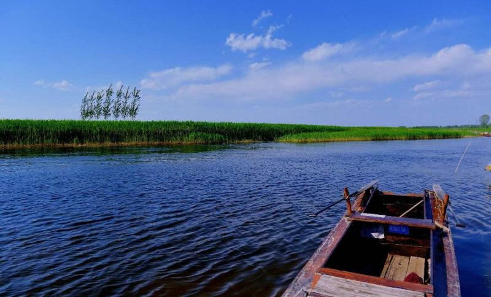

.jpg) 白洋淀（Bai-yang Lake，亦作Baiyang Lake），又名西淀，古称掘鲤淀。白洋淀上游接纳海河水系中大清河上源唐河、潴龙河来水，下游由大清河排出。湖区水产丰富，芦苇分布面积广。环湖洼地大多已改为稻田。
白洋淀（Bai-yang Lake，亦作Baiyang Lake），又名西淀，古称掘鲤淀。白洋淀上游接纳海河水系中大清河上源唐河、潴龙河来水，下游由大清河排出。湖区水产丰富，芦苇分布面积广。环湖洼地大多已改为稻田。
白洋淀是国家级5A景区白洋淀在河北省保定市安新县境，地处京、津、保腹地，距北京、天津约150公里左右，距保定市区30公里左右，总面积366平方公里，这里古有“北地西湖”之称，今有“华北明珠”之誉，诗赞“北国江南”，歌咏“鱼米之乡”，是帝王巡幸之所，“荷花淀派”诞生之地，雁翎神兵扬威之处，“小兵张嘎”造就之域。
白洋淀水域辽阔，烟波浩淼，势连天际，总面积366平方公里，淀区被39个村落、3700条沟壕、12万亩芦苇分割成大小不等、形状各异的143个淀泊。
 白洋淀气候宜人，风景绝美，四季竞秀，妙趣天成。春光降临，芦芽竞出，满淀碧翠；每至盛夏，“蒲绿荷红”，岸柳如烟；时逢金秋，芦荡飞雪，稻熟飘香；隆冬时节，坚冰似玉，坦荡无垠。
白洋淀是典型的北方湿地，自古以来就以物产丰富著称。它是鸟的王国、鱼的乐园、多种水生植的博物馆，有着得天独厚的旅游资源。白洋淀游区分六大景区，即鸳鸯岛民俗文化景区、荷花观赏景区、生态游乐景区、休闲娱乐景区、码头观光景区、民俗村观光景区。每个景区各具特色，它们集吃、住、行、游、购、娱为一体，使所有的客人游得尽兴，玩得开心、吃得爽意，住得温馨。
白洋淀人民具有光荣的革命传统，1923年加入共产党的辛璞田，受顺直省委的派遣到家乡马家寨开展农民的运动。1927年夏共产党刘亦瑜，受中共保定地委的派遣到淀区北冯村与王家骥等人，建立起淀区第一个党支部。辛璞田、刘亦瑜、李之光、侯卓夫等革命先烈，为寻求救国救民之路，舍家弃业，投身革命，坚持真理，宁死不屈，成为共产党员学习的榜样。抗日战争时期，活动在白洋淀的抗日武装“雁翎队”，在中国共产党的领导下，利用淀区芦荡遍布，沟河交错的有利地形，开展机动灵活的游击战，以弱胜强，痛击日本侵略军，大长我中华民族之威风，显示出燕赵儿女的聪慧勇敢。作家徐光耀撰写的《小兵张嘎》就取材于“雁翎队”。著名作家孙犁的《荷花淀》，孔厥、袁静的《新儿女英雄传》均以淀区为题材。白洋淀儿女那飒爽英姿，今日仍被全国人民传扬歌颂。 淀区涉及保定、沧州两个地级市的4县1市，占安新县总面积的85%。安新县境内水区人口10万人，36个村四面环水，芦苇年产值4000多万元，是水区人民主要生活来源，鱼类16科54种，最高产量800多万公斤。以盛产大米、鱼虾、菱藕和“安州苇席”著称。其中，元鱼和桂花鱼中外闻名，被誉为美丽富饶的鱼米之乡。开展旅游业以来接待中外游客300余万人次。每年7月23日举办“中国白洋淀荷花节”。
小兵张嘎
《小兵张嘎》是当代著名作家徐光耀的代表作。这部作品自1961年发表至今，已经四十多年了。小说和电影中的“张嘎”，因其“英气”与“嘎气”，已成为新中国几代人童年记忆中的最灿烂的一部分。 讲述了小嘎子在老钟叔，老罗叔，区队长，奶奶的引导下，成为一名名副其实的八路战士的过程。
荷花淀
这部作品的主要人物是妇女，又以水生嫂为核心。她热爱劳动，有娴熟的劳动技能；她体贴丈夫，温柔细心；她开明稳重，刚毅勇敢；她关心国家兴亡，最终投身抗日洪流。她不愧为我国现代文学史上具有独特魅力 的典型人物。她与鲁迅笔下的祥林嫂性格有相同之处：热爱劳动，勇于反抗；但又有很大不同：乐观开朗，积 极向上。加之生活在抗日根据地，这使她与祥林嫂的命运大相径庭。与赵树理笔下的小芹相比，虽然生活在同 一时代的同一环境，但水生嫂已不再是为争取个人婚姻自主抗争，而是跻身抗日的行伍，勇敢地肩负起民族存 亡的重荷。即使在孙犁同类题材的作品中，她也堪称典型。

.jpg)
.jpg)
.jpg) 白洋淀“全鱼宴”有广义与狭义之分。广义包括鱼、虾、蟹等水产品在内，而狭义的只包括鱼类。为适应不同层次的旅游者的需要，白洋淀“全鱼宴”又有不同规格。一般大众餐饮有四凉四热、六凉六热、八凉八热。凉菜包括凉拌鱼丝、芝麻鱼条、香辣鱼肝、蛋皮鱼卷、酥炸鱼块、烧拌鱼丝等，热莱包括酥鱼片、炒鱼片、熘鱼片、清蒸甲鱼、爆炒圆鱼、清蒸圆鱼、鲇鱼豆腐、爆炒鲇鱼、金毛狮子鱼、红烧鱼段、红烧鲤鱼等。有时根据顾客要求，也兼做一些鱼类小吃，如熏泥鳅、小鱼咸菜之类，作为佐酒小菜。 高品位的全鱼宴包括八凉八热、二个饭菜、一个汤菜，共十九品菜。八品凉菜分别为花式大拼盘，呈松鹤延年图样；其它七个围盘为蛋皮鱼卷、酥炸鱼条、香辣鱼肝、凉拌鱼丝、酸抖鱼块、玻璃鱼、芝麻鱼饼，八品热菜分别是蟹粉鱼蜃、松鼠鱼、须发鱼排、金毛狮子鱼、鸳鸯鱼丝、番茄鱼片、凤尾鱼托、芙蓉鲫鱼。两个饭菜是小龙过江和什锦脱骨鱼。一个汤菜是三色鱼脯汤。 在凉、热菜中两次提到的鱼片，在白洋淀是“吃鱼不见鱼”的特色菜。这在中央电视台著名节目主持人赵忠祥《岁月情缘》中就有过这样的描述：“……也难忘在那一天，乡亲们用新麦磨面烙的大饼和堆得高高的一大盘用刚从淀中捞上来的鱼做的香嫩爽滑的鱼片。”赵忠祥在异域他乡访问时，竟然还忆起了白
白洋淀“全鱼宴”有广义与狭义之分。广义包括鱼、虾、蟹等水产品在内，而狭义的只包括鱼类。为适应不同层次的旅游者的需要，白洋淀“全鱼宴”又有不同规格。一般大众餐饮有四凉四热、六凉六热、八凉八热。凉菜包括凉拌鱼丝、芝麻鱼条、香辣鱼肝、蛋皮鱼卷、酥炸鱼块、烧拌鱼丝等，热莱包括酥鱼片、炒鱼片、熘鱼片、清蒸甲鱼、爆炒圆鱼、清蒸圆鱼、鲇鱼豆腐、爆炒鲇鱼、金毛狮子鱼、红烧鱼段、红烧鲤鱼等。有时根据顾客要求，也兼做一些鱼类小吃，如熏泥鳅、小鱼咸菜之类，作为佐酒小菜。 高品位的全鱼宴包括八凉八热、二个饭菜、一个汤菜，共十九品菜。八品凉菜分别为花式大拼盘，呈松鹤延年图样；其它七个围盘为蛋皮鱼卷、酥炸鱼条、香辣鱼肝、凉拌鱼丝、酸抖鱼块、玻璃鱼、芝麻鱼饼，八品热菜分别是蟹粉鱼蜃、松鼠鱼、须发鱼排、金毛狮子鱼、鸳鸯鱼丝、番茄鱼片、凤尾鱼托、芙蓉鲫鱼。两个饭菜是小龙过江和什锦脱骨鱼。一个汤菜是三色鱼脯汤。 在凉、热菜中两次提到的鱼片，在白洋淀是“吃鱼不见鱼”的特色菜。这在中央电视台著名节目主持人赵忠祥《岁月情缘》中就有过这样的描述：“……也难忘在那一天，乡亲们用新麦磨面烙的大饼和堆得高高的一大盘用刚从淀中捞上来的鱼做的香嫩爽滑的鱼片。”赵忠祥在异域他乡访问时，竟然还忆起了白.jpg) 洋淀的鱼片，足见这品菜以其特有的色、香、味留给人的长久回味。 我想，您来白洋淀旅游，品尝了白洋淀的全鱼宴，定会感到来白洋淀确实不虚此行。 餐馆推荐县城里的“杜氏餐馆” 到白洋淀后河蟹和河虾是必点的常规菜。除此之外,还有一道贴饼子熬小鱼(又叫“一锅鲜”)的菜也很有特色。饼子用的是玉米面、黄豆面、小米面、绿豆面、白洋淀菱角面、白洋淀藕粉等6种面粉制成的,小鱼是白洋淀水域里自然生长的一种长约一寸的野生鱼。其做法是先用一只大铁锅把活小鱼下锅,多加汤,然后在大铁锅边贴饼子,盖上锅盖,小火熬制一小时后出锅,鱼带点汤。因饼子靠近鱼,所以出锅后的饼子带点鱼味,口味甜、香、酥,非常独特,不可不尝,价钱在30~40元之间。
洋淀的鱼片，足见这品菜以其特有的色、香、味留给人的长久回味。 我想，您来白洋淀旅游，品尝了白洋淀的全鱼宴，定会感到来白洋淀确实不虚此行。 餐馆推荐县城里的“杜氏餐馆” 到白洋淀后河蟹和河虾是必点的常规菜。除此之外,还有一道贴饼子熬小鱼(又叫“一锅鲜”)的菜也很有特色。饼子用的是玉米面、黄豆面、小米面、绿豆面、白洋淀菱角面、白洋淀藕粉等6种面粉制成的,小鱼是白洋淀水域里自然生长的一种长约一寸的野生鱼。其做法是先用一只大铁锅把活小鱼下锅,多加汤,然后在大铁锅边贴饼子,盖上锅盖,小火熬制一小时后出锅,鱼带点汤。因饼子靠近鱼,所以出锅后的饼子带点鱼味,口味甜、香、酥,非常独特,不可不尝,价钱在30~40元之间。